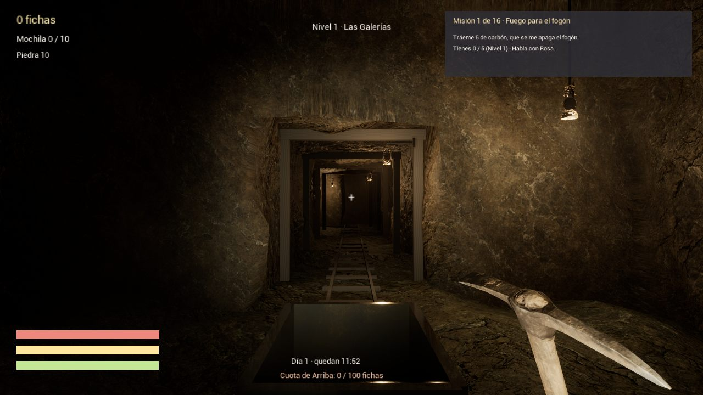

Videojuego PC · Unreal Engine 5
Bajo Tierra
Aventura de minería y supervivencia en primera persona. Explora minas, rescata a tu equipo y enfrenta criaturas bajo tierra.
- Mapa, brújula, estamina y niveles de dificultad
- Enemigos con IA: reptadores, murciélagos, jefe final
- Herramientas mejorables (taladro, faroles) y encargos
Unreal 5C++Blueprints